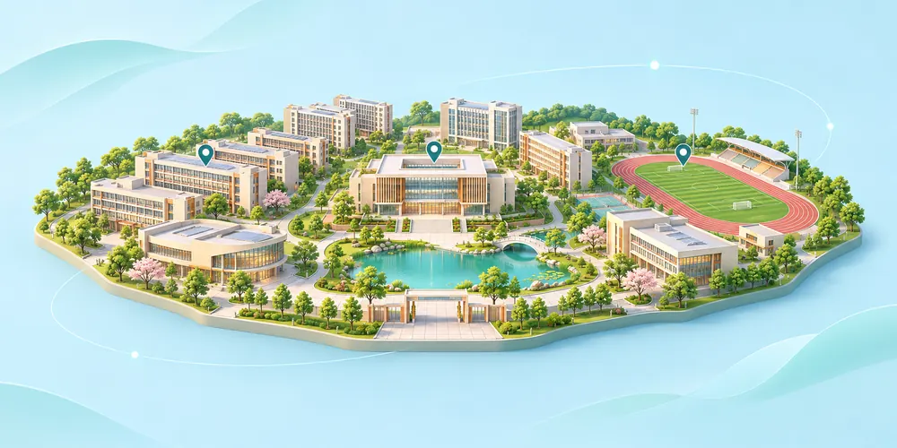
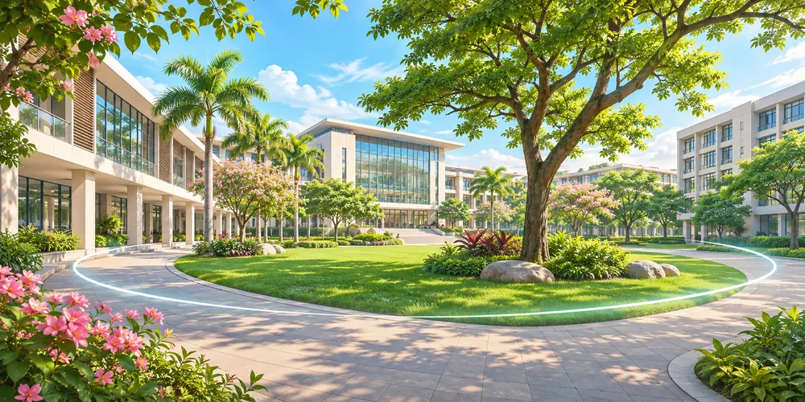

CAMPUS NOVA · 东莞职业技术学院
校园导览
先在沙盘里看懂建筑分布，再进入全景看看现场。

3D 沙盘 示意图
360° 全景 示意图VR 全景漫游
拖动环顾实景，缩放查看细节，通过场景列表或热点切换地点。
CAMPUS NOVA · 东莞职业技术学院
先在沙盘里看懂建筑分布，再进入全景看看现场。

3D 沙盘 示意图
360° 全景 示意图拖动环顾实景，缩放查看细节，通过场景列表或热点切换地点。